Die Funktionsweise der Geschäftsziele ähnelt den Ranglisten. Im Gegensatz zu Ranglisten geht es bei Geschäftszielen aber nicht darum, dass einzelne Benutzer Punkte sammeln, sondern dass in einem
Intervall über alle Benutzer hinweg Punkte gesammelt werden. Ein Geschäftsziel betrifft also immer alle Teilnehmer gleichermaßen: Alle ziehen an einem Strang und sammeln gemeinsam Punkte.
Auch bei einem wiederholbaren Erfolg wird immer auf den Benutzer eingeschränkt. Beispielsweise ist der wiederholbare Erfolg erreicht, wenn die Anzahl der Zeilen in der Datenquelle, in denen der Benutzer vorkommt, größer 50 ist. Bei Geschäftszielen wird nicht auf den Benutzer eingeschränkt, das heißt, alle Benutzer erreichen das Ziel (oder eben keiner).
Geschäftsziele werden in der WinLine über
1 WinLine INFO
1 SMART
1 SCORE
aus dem Menüpunkt
1 Admin
1 Geschäftsziele verwalten
definiert, indem in der Kopfleiste "Admin: Geschäftsziele bearbeiten" das "+" Icon selektiert wird.
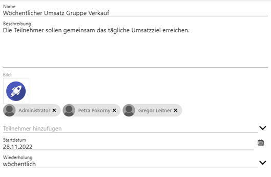
Ø Name und Beschreibung
Hier vergebene Angaben bei "Name" und "Beschreibung" stellen das Geschäftsziel nach außen dar und sollten eindeutig und bezugnehmend vergeben werden.
Ø Bild
Ermöglicht die Auswahl eines Icons, mit dem die Rangliste abgebildet werden soll.
Ø Teilnehmer hinzufügen
Es können Benutzergruppen selektiert und hinzugefügt werden.
Hinweis zum Beispiel:
Über das "x" innerhalb des Gruppenicons können selektierte Gruppen wieder entfernt werden.
Ø Startdatum
Definiert, ab wann Werte für das Ziel in das Ergebnis einfließen sollen.
Ø Wiederholung
Als "Wiederholung" kann aus folgenden Intervallen gewählt werden:
ü täglich
ü wöchentlich
ü monatlich
Über das (in der Kopfleiste des Fensters) vorhandene Check-Icon gelangt man in das Fenster "Admin: Geschäftsziele bearbeiten".
Über das Selektieren der entsprechenden Kachel kann das Geschäftsziel gem. der Vorgaben weiter definiert werden. Grundsätzlich werden die Angaben übernommen, welche bei der vorherigen Anlage des Ziels eingetragen worden sind.
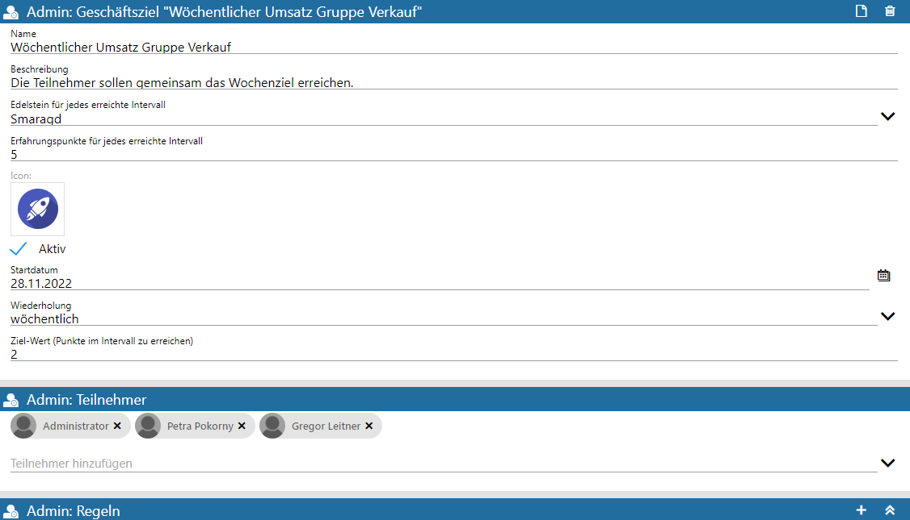
Ø Edelstein für jedes erreichte Intervall
Es folgt eine Selektion des Edelsteins, welcher beim Erreichen des Ziels zum Ende eines jeden Intervalls an alle Teilnehmer der Gruppe vergeben werden soll. Dabei kann aus den folgend aufgeführten Arten/Farben gewählt werden:
ü Bernstein
ü Amethyst
ü Smaragd
ü Rubin
ü Saphir
ü Topaz
ü kein Edelstein
Ø Erfahrungspunkte für jedes erreichte Intervall
Die eingetragenen Erfahrungspunkte je Intervall werden allen Teilnehmern der Benutzergruppe gutgeschrieben und werden zudem zur elementübergreifenden Gesamtpunktzahl der Erfahrungspunkte hinzuaddiert. Sofern im Admin-Menü "Level" definiert wurden, wirken sich diese Punkte entsprechend auf das Level des Benutzers aus.
Ø Icon
Optional kann ein anderes Icon selektiert werden.
Ø Checkbox "Aktiv"
Diese Checkbox definiert, ob das Ziel teilnehmenden Benutzern angezeigt werden soll.
Ø Startdatum
Des Startdatum kann bearbeitet werden.
Ø Wiederholung
Das bezugnehmende Intervall kann geändert werden.
Ø Ziel-Wert (Punkte im Intervall zu erreichen)
Die aus den Regeln resultierenden Punkte werden mit dem Ziel-Wert verglichen.
Beispiel
Ist in der Regel für das Geschäftsziel definiert worden, dass es 1 Erfahrungspunkt für die Erwirtschaftung von 1.000 € geben soll, so besagt der Ziel-Wert "2", dass innerhalb des geltenden Intervalls diese Regel 2x erfüllt sein muss.
Ø Admin: Teilnehmer
Benutzer/-Gruppen, die an dem Ziel mitwirken sollen, können angepasst werden.
Ø Admin: Regel
Anschließend kann die Regel des neuen Geschäftsziels bearbeitet werden, indem auf das "+"-Icon geklickt wird.
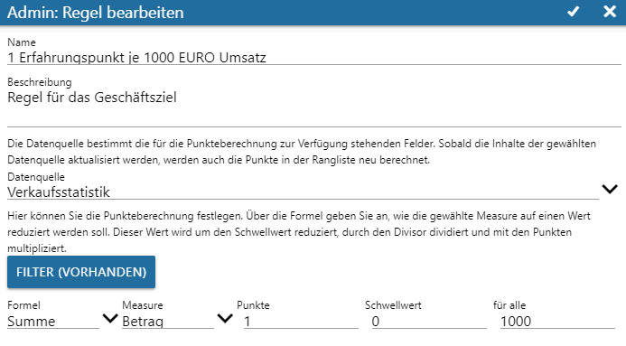
Ø Name und Beschreibung
Um Ziele besser zuordnen zu können, empfiehlt es sich, Name und Beschreibung entsprechend zielgerichtet zu wählen.
Ø Datenquelle
Aus der (über das rechte Icon aufrufbaren) Auswahl muss die bezugnehmende Datenquelle selektiert werden.
Ø Button "Filter"
Sollen innerhalb der Datenquelle weitere Einschränkungen geltend gemacht werden, so besteht über die Filterdefinition diese Option, sodass aus dem Bereich "Datenfelder" via Drag and Drop "Dimensionen" bzw. "Werte" in den Bereich "Filterfeld hier fallen lassen" gezogen und fallengelassen werden können.
Hinweis
Hier gezeigte Filtereinstellungen sind in diesem Beispiel relevant, da es für die Datenquelle "Verkaufsstatistik" mehrere Snapshots gibt und in dem Widget Filter über den Wert "Selektion 1" zielgerichtet der passende Snapshot gewählt werden muss.
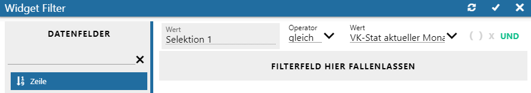
Über das Check-Icon in der Kopfleiste wird der Filter gespeichert und die Bezeichnung des Filter-Buttons angepasst.
Definition der Geschäftsziel-Regel
Worin unterscheidet sich das Geschäftsziel von einem wiederholbaren Erfolg? Wie auch bei Ranglisten ist es bei Geschäftszielen möglich, dass mehrere Regeln definiert werden. Man kann also ein Geschäftsziel definieren, in dem verschiedenste Measures gewichtet und abstrahiert werden. Am Ende werden die aus den Regeln resultierenden Punkte mit dem Ziel-Wert verglichen.
In den folgenden Feldern wird festgelegt, wie die Regel die Punkte berechnen soll.
Ø Formel
Hier wird die Formel eingetragen, die für die Geschäftszielregel herangezogen werden soll.
Ø Measure (Wert)
Hier wird der Wert der Datenquelle ausgewählt, auf dessen Basis die Punkte berechnet werden sollen.
Ø Punkte
Hier wird eingetragen, wie viele Punkte pro erfolgreichem Regel-Match vergeben werden sollen.
Ø Schwellenwert
Hier wird angegeben, ab welchem Wert für die Werte Punkte vergeben werden sollen.
Ø für alle
Es wird angegeben, für wie viele Elemente der Werte Punkte vergeben werden sollen.
Angaben des Fensters "Admin: Regel bearbeiten" können auch hier über das Kopfleisten-Check-Icon gespeichert werden, sodass final das fertige Geschäftsziel (inkl. der Regel) im Bereich "Admin: Rangliste" zu erkennen ist.
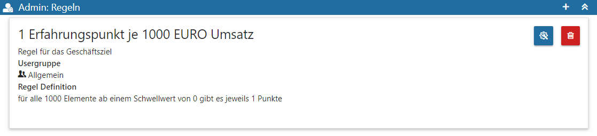
Ø Kopfleisten-Icons der Rangliste
ü Dokument-Icon
Zeigt das
Ergebnis der Rangliste in einem separaten Fenster.
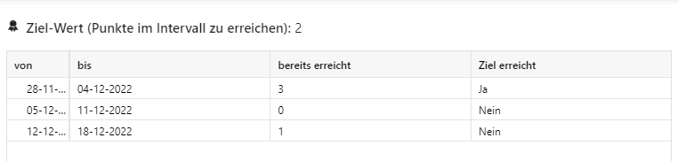
ü Mülleimer-Icon
Löscht die
erstellte Rangliste.
Ø Icons "Admin:Regeln"
ü "Admin: Regel bearbeiten"
Über
dieses Icon kann eine Bearbeitung der bestehenden Regel durchgeführt werden.
ü "Regel löschen"
Ermöglicht das
Löschen einer angelegten Regel.
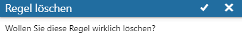
Edelsteine für Geschäftsziele
Edelsteine sind Gegenstände, welche von Benutzern dann gesammelt werden, wenn ein Geschäftsziel am Ende eines vorgegebenen Intervalls erfüllt wurde. Vergeben wird dieser Edelstein an alle eingetragenen Teilnehmer. Damit übergreifend mehrere Arten und somit Unterscheidungen zwischen den gewonnenen Edelsteinen getroffen werden können, existieren diese in den folgenden Farben
ü Amethyst
ü Bernstein
ü Rubin
ü Saphir
ü Smaragd
ü Topaz
ü kein Edelstein
Welche Art Edelstein am Ende des Geschäftsziel-Intervalls verliehen werden soll, wird in der Geschäftszieldefinition festgelegt. Neben den 6 Farben gibt es auch die Auswahl "kein Edelstein". In diesem Fall wird kein Edelstein vergeben.
Dies Anzahl der gewonnenen Edelsteine hängt davon ab, wie oft die Teilnehmer innerhalb der aufgeführten Intervalle die Messlatte erreicht haben. Für jedes Intervall, in dem dieser Ziel-Wert erreicht wurde, bekommen alle Benutzer, die an dem Geschäftsziel teilnehmen, die für dieses Geschäftsziel definierten Erfahrungspunkte und Edelsteine und das Ziel gilt für dieses Intervall als erreicht.
Beispiel
Das Startdatum des Geschäftsziels bestimmt, ab wann die Intervalle berechnet werden. Ist das Startdatum z. B. auf den 01.09.2021 gesetzt, das Intervall monatlich und angenommen "heute" ist der 30.09.2022, so werden insgesamt 13 Intervalle berechnet (und auch Edelsteine und Erfahrungspunkte bis zu 13x vergeben).
Darstellung der Geschäftsziele in den Übersichten
Folgende Abbildungen zeigen die Geschäftsziel-Ergebnisse aus dem Beispiel.
Ø SCORE Übersicht des teilnehmenden Benutzers
In der SCORE Übersicht des Benutzers stehen die aktiven definierten Geschäftsziele im Bereich "Meine Geschäftsziele" zur Verfügung. Zudem werden zusammenhängend im Bereich "Edelsteine" vergebene Edelsteine aufgeführt.
Die aufgeführten Widgets ("Edelsteine" und "Meine Geschäftsziele") können selektiert und geöffnet werden.
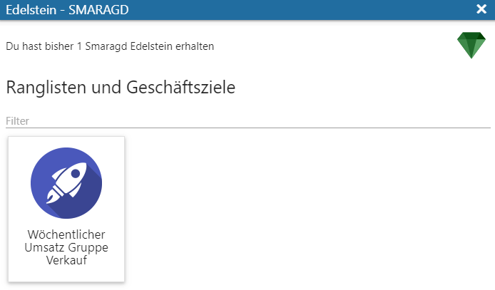
Somit können für Edelsteine bezugnehmende SMART SCORE-Elemente aufgeführt werden, sodass der Benutzer stets den Ursprung seiner Verdienste erkennen kann. Das darin enthaltene Geschäftsziel-Element öffnet (analog zur Geschäftsziel-Kachel "Meine Geschäftsziele" der SCORE Übersicht) die Details zum Ziel:
Ø Details zur Rangliste
Hier werden zusätzlich die Definitionen, das aktuelle Intervall und die vergangenen Intervalle, sowie enthaltene Regeln transparent aufgeführt.
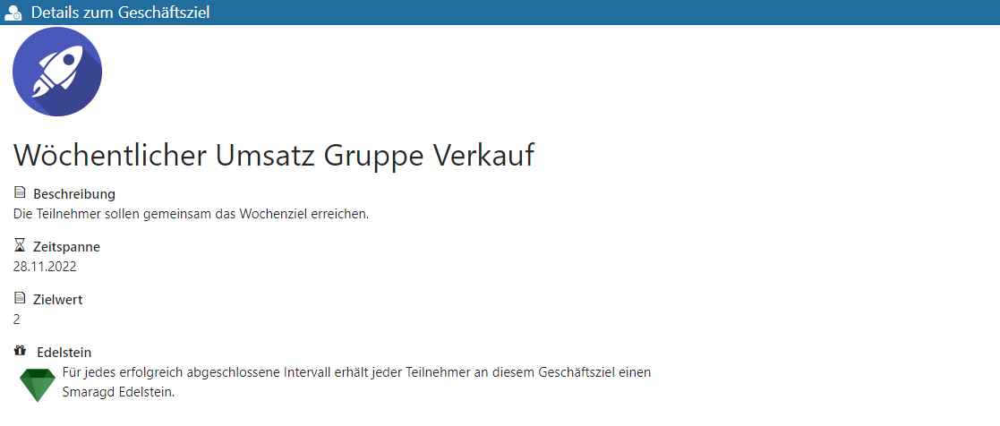
Intervalle
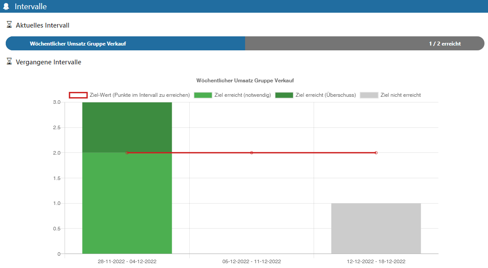
Regeln
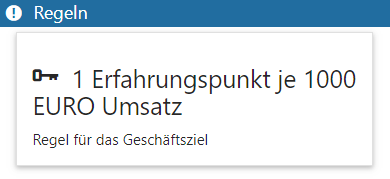